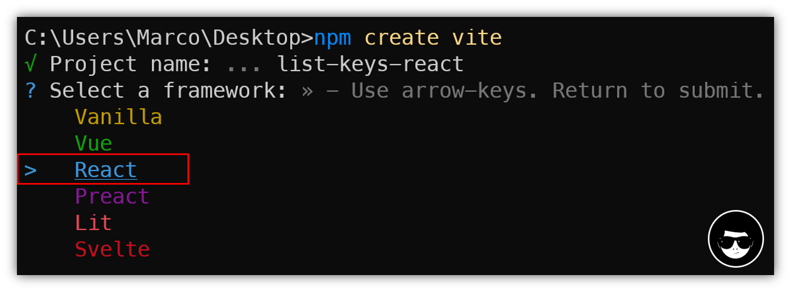
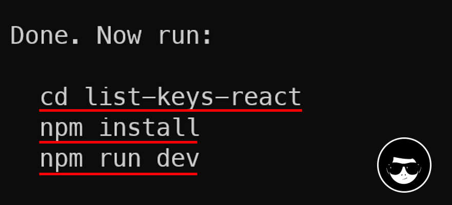
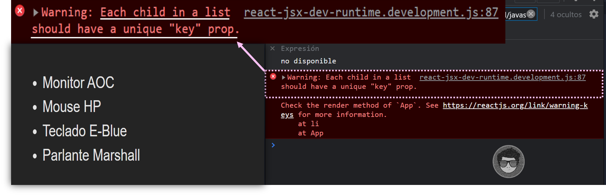
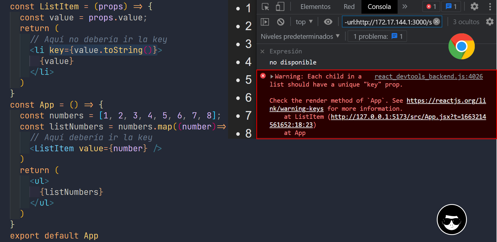
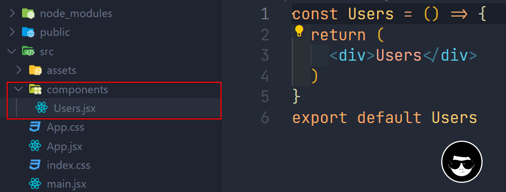

TEMA: KEYS
CONTENIDO⚓
- ¿Qué son las listas?
- Renderizar una lista
- ¿Para qué nos sirven las keys?
- Extraer componentes con keys
- Ejemplo consumiendo una API y usar keys dentro de una fila en una tabla
¿Qué son las listas en React?⚓
Las listas hacen referencia a un arreglo de datos el cual puede ser:
- Un arreglo de objetos
- Un arreglo de datos simples, como caracteres, números, etc.
Y como toda lista o conjunto en programación. React nos permite recorrerlas con la intención de extraer los elementos y mostrarlos en el DOM.
A modo de introducirnos en materia, observemos el siguiente código, donde usamos la función map()
para
transformar un array de números numbers y duplicar sus valores. Almacenamos el nuevo array devuelto
por map() a la constante doubled y lo mostramos por salida estándar de la consola:
const numbers = [1, 2, 3, 4, 5];
const doubled = numbers.map((number) => number * 2);
console.log(doubled);
Este código nos muestra por consola : [2, 4, 6, 8, 10].
En javascript hay diferentes funciones que nos permiten iterar sobre un arreglo, forEach(),
map(), filter, etc. Cada una con objetivos distintos algunas retornan un nuevo arreglo,
otras valores booleanos, etc. Si quieres ver más sobre arreglos puedes ver una guía resumida sobre
arreglos en javascript.
-
forEach()recibe una función callback como argumento, esta función es invocada una vez por cada elemento del arreglo. Sin embargo después de iterar por todo el arreglo, forEach retornaundefined. -
map()por su parte también recibe una función callback como argumento, esta función es invocada una vez sobre cada elemento del arreglo, cambiando cada uno de ellos. Y después de iterar por todo el arreglo, retorna un nuevo arreglo, con los nuevos elementos
Como forEach retorna indefinido, creo que es bastante obvio cual es el método que tendremos que utilizar para crear nuestra listas en React.
Renderizar una lista en React⚓
Primero debemos crear un nuevo proyecto de React, en este caso voy a utilizar vite:
npm create vite

Luego seleccionamos javascript:

Esto nos crea una estructura del proyecto y nos muestra los siguientes comandos para poder ejecutar y correr el proyecto:

cd project-namepara movernos al proyecto creado.npm installpara que se instalen todas las dependencias listadas en package.json.npm run devpara lanzar el servidor de desarrollo.
Clic ver demo
Ahora obtendremos la siguiente estructura:
.
|-- index.html
|--📂node_modules
|-- package-lock.json
|-- package.json
|-- vite.config.js
|-- public
| `-- vite.svg
|--📂src
| |-- App.css
| |-- App.jsx
| |--📂assets
| | `-- react.svg
| |-- index.css
| `-- main.jsx
Limpiaremos el proyecto remplazando el contenido del archivo App.jsx por el siguiente:
const App = () => {
const products = [
"Monitor AOC",
"Mouse HP",
"Teclado E-Blue",
"Parlante Marshall"
];
const listProducts = products.map(product =>
<li>{product}</li>
)
return (
<ul>{listProducts}</ul>
)
}
export default App

Como podemos observar recorremos el array products y a continuación usando la función
map de los arreglos en javascript, devolvemos un elemento <li> por cada item y lo
almacenamos en una constante llamada listProducts. Finalmente, asignamos el nuevo array de elementos
resultante a un elemento <ul> por medio de la sintaxis JSX. Ahora podemos ver en el navegador
que se mostrará en forma de lista desordenada pero si abrimos la consola usando la combinación Ctrl +
Shif + i veremos la siguiente advertencia:

React nos dice que una key debería ser proporcionada para cada item de la lista. Una
“key” es un atributo especial de tipo string que debemos incluir al crear listas de
elementos.
Vamos asignar una key a nuestra lista de productos dentro de products.map() y arreglar
el problema de la falta de key:
const listProducts = products.map(product =>
<li key={product}>
{product}
</li>
);
Si guardamos cambios y refrescamos la página al abrir la consola ya no debería mostrarse la advertencia:

¿Para qué nos sirven las Keys?⚓
Las keys ayudan a React a identificar que items han cambiado, son agregados, o son eliminados. Las keys deben ser dadas a los elementos dentro del array para darle a los elementos una identidad estable.
La mejor forma de elegir una key es usando un string que identifique únicamente a un
elemento de la lista entre sus hermanos. Lo habitual es usar los IDs u otro atributo que no se duplique de tus
datos como key:
//Products.jsx
const Products = () => {
const products = [
{cod: 1001, name: "Producto-1"},
{cod: 1002, name: "Producto-2"},
{cod: 1003, name: "Producto-3"}
];
const listProducts = products.map(product =>
<li key={product.cod.toString()}>
{product.name}
</li>
);
return (
<ul>
{listProducts}
</ul>
)
}
export default Products

Cuando no tengamos IDs estables para renderizar, en su lugar podemos utilizar el índice del item como una
key como último recurso:
// Products.jsx
const products = [
{cod: 1001, name: "Producto-1"},
{cod: 1002, name: "Producto-2"},
{cod: 1003, name: "Producto-3"}
];
const listProducts = products.map((product, index) =>
<li key={index}>
{product.name}
</li>
);
React en su documentación no nos recomienda usar los índices para keys si el orden de los item puede cambiar. Esto puede impactar negativamente el rendimiento y puede causar problemas con el estado de los componentes.
Extracción de componentes con keys⚓
Para entender lo que nos dice React en su documentación acerca de como usar las keys en componentes:
“Las keys solo tienen sentido en el contexto del array que las envuelve.”
Por ejemplo, si creamos un componente de función ListItem, deberías mantener la key en los elementos
<ListItem /> del array en lugar de usarlo en el elemento <li> del propio
ListItem.
Ejemplo de uso incorrecto:⚓
const ListItem = (props) => {
const value = props.value;
return (
// Aquí no debería ir la key
<li key={value.toString()}>
{value}
<//li>
)
}
const App = () => {
const numbers = [1, 2, 3, 4, 5, 6, 7, 8];
const listNumbers = numbers.map((number)=>
// Aquí debería ir la key
<ListItem value={number} />
)
return (
<ul>
{listNumbers}
</ul>
)
}
export default App

Como podemos observar nos muestra la advertencia que hemos recibido en ejemplos anteriores, la razón es porque
justamente el contexto que los envuelve ahora ya no es un elemento <li> sino que ahora es un
componente funcional que se llama ListItem. En el siguiente ejemplo se muestra el
uso correcto.
Ejemplo de uso correcto⚓
const ListItem = (props) => {
const value = props.value;
return (
// Aquí no hay necesidad de usar key
<li>{value}</li>
)
}
const App = () => {
const numbers = [1, 2, 3, 4, 5, 6, 7, 8];
const listNumbers = numbers.map((number)=>
<ListItem key={number.toString()} value={number} />
)
return (
<ul>
{listNumbers}
</ul>
)
}
export default App

Ejemplo consumiendo API⚓
La finalidad de este ejemplo es usar keys dentro de una tabla concretamente en cada fila; quire
decir en elementos <tr>, la cual llenaremos consumiendo la API de JSONPlaceholder.
Primero creamos un nuevo proyecto, puedes seguir los mismos pasos que en la sección de Renderizar una vista.
Abierto el proyecto creamos un nuevo componente llamado Users.jsx

Luego lo importamos en App.jsx:
// App.jsx
import Users from './components/Users';
const App = () => {
return (
<Users />
)
}
export default App
Ahora podemos crear una función en el componente Users que obtenga los datos de usuarios desde la API:
fetch('https://jsonplaceholder.typicode.com/users')
.then(response => response.json())
.then(json => console.log(json))
Si vemos en consola veremos que se activa 2 veces el código de la Promise cumplida:

Esto se debe a que React está usando el modo estricto que precisamente silencia los registros de segunda llamada. Sin embargo, puede causar un comportamiento no deseado en ciertos casos.
El registro then dentro de la devolución de llamada en la promesa funciona porque es un
comportamiento asíncrono fuera de los métodos de ciclo de vida de React. React no silencia esos
registros en modo estricto. Pero console.log() es una tarea síncrona que ocurre dentro la función
ejecutora o sea dentro de la Promise pero esta a su vez ocurre durante la ejecución del
cuerpo de la función del componente.
Para quitarlo simplemente quitamos las etiquetas de <React.StrictMode> en el archivo
index.jsx. (No recomendaría esta solución), pero aunque en desarrollo veamos que se ejecuta dos
veces, la verdad es que en producción solo se ejecuta 1 vez. Esto se debe también a que
React.StricMode cuando estamos en desarrollo una de las cosas que hace es que se llame a la
función de renderizado dos veces. La idea de esto es ayudar a los desarrolladores a identificar efectos
secundarios.
Continuando ya que tenemos los datos de los usuarios, ahora podemos definir un estado para contener estos datos y finalmente mostrarlo dentro del cuerpo de la tabla:
import { useState } from 'react';
const Users = () => {
// hook
const [users, setUsers] = useState([]);
// función que obtiene los datos de usuarios de la API
fetch('https://jsonplaceholder.typicode.com/users')
.then(response => response.json())
.then(json => setUsers(json)) // seteamos el estado
return (
<table border="1">
<thead>
<tr>
<th>Name</th>
<th>Username</th>
</tr>
</thead>
<tbody>
{users.map(user =>
<tr key={user.id.toString()}>
<td>{user.name}</td>
<td>{user.username}</td>
</tr>
)}
</tbody>
</table>
)
}
export default Users
Resultado: